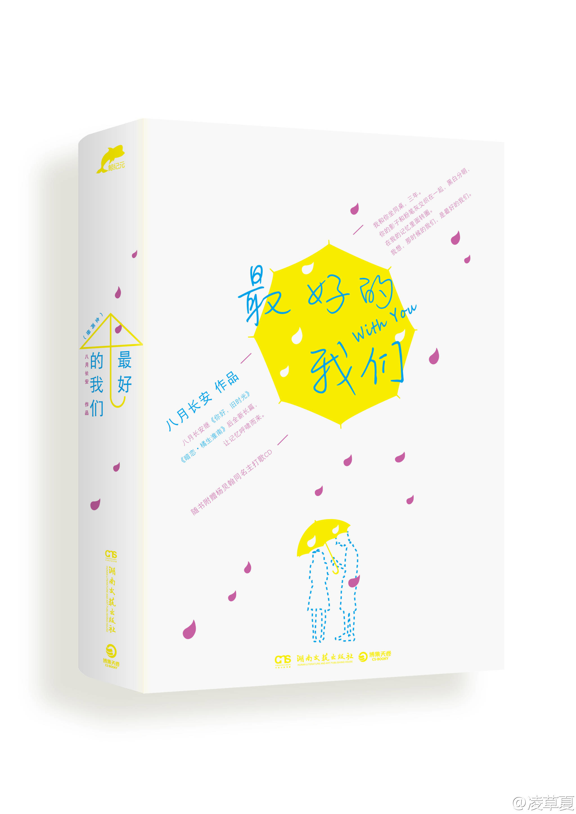

| 书名 | 最好的我们 |
| 作者 | 八月长安 |
| 类别 | 青春文学、小说 |
| 又名 | 流水混账 |
| 页数 | 544 |
| 字数 | 400000 |
| 出版社 | 湖南文艺出版社 |
| 出版时间 | 2013/7/1 |
作品简介
你总是说青春从不曾永远，而那时候的我们，就是最好的我们。这一次，让我们和耿耿、余淮、余周周、林杨、洛枳、盛淮南一起和整个青春做告别。 你还记得高中时的同桌吗？那个少年有世界上最明朗的笑容，那个女生有世界上最好看的侧影。高中三年，两个人的影子和粉笔灰交织在一起，黑白分明，在记忆里面转圈。《最好的我们》以怀旧的笔触讲述了女主角耿耿和男主角余淮同桌三年的故事，耿耿余淮， 这么多年一路走过的成长故事极为打动人心，整个故事里有的都是在成长过程中细碎的点点滴滴，将怀旧写到了极致，将记忆也写到了极致。
经典语录
- @我不幸是世界上最不快乐的那种人，没能力，却有上进心；没天赋，却有梦想；越努力，越难过。
- @喜欢一个人的心情是不听劝的，你以为我在遭受冷遇的时候，没有劝过自己吗？
- @青春就是这样吧，谨慎珍惜还是恣意放肆都一样，反正不管怎么度过，最终都会遗憾地明白，这段好时光，到底还是浪费了。
- @青春就是这样，好得像是无论怎样度过都会被浪费。 那么，不如浪费在你身上。
- @在我们的时间轴上，我拥有的都是零碎的断点，拼凑不出一个完整地余淮。
- @他一次次被命运捉弄，一次次拼尽全力把人生道路拨回正轨，然后再一次次输给命运的翻云覆雨手。
- @这世界上的爱情有时候一共也就那么多，一些人得到了，一些人也就失去了。
- @他带着背后的岁月，呼啸而来。像一场七年前的洪讯，越过一整个青春，时至今日终于漫到我的眼前。
- @不是所有的坚持都有结果，但是总有一些坚持，能从一寸冰封的土地里，培育出十万朵怒放的蔷薇。
- @认命就是你和你的自尊心野心不甘心一起围着桌子坐下来，握手，微笑，为了不再痛苦。
- @我们总是会不接受自己在某一个群体中的位置。抗争成功的人得到喜欢的位置，抗争不了的人，总有一天会习惯的。
- @我们不负责任地用几句轻飘飘的赞许将人家捧得高高的，但万一摔下来，谁也不会去接住她。
作者简介
八月长安，八十年代末出生于盛夏八月，但求此生长安。昵称二熊，哈尔滨长大，毕业于北京大学光华管理学院。热爱《银魂》，热爱《Slam Dunk》，热爱二维纸片儿人，热爱FC红白机……热爱的东西太多，于是苟活至今，抓着青春和梦想的尾巴，哭爹喊娘地死活不撒手。现居上海。 2009年，八月长安出版了第一本长篇青春小说《你好，旧时光》，此后又推出了同系列图书《橘生淮南·暗恋》，并《最好的我们》同为振华三部曲。备受80、90后欢迎。